Префектура Яманаси · Фудзиёсида · где остановиться
Mt.Shakushi Gateway Camp: купола на склоне горы с Фудзи прямо перед кроватью
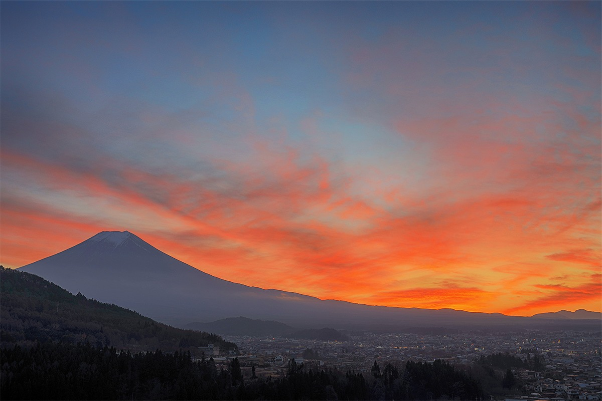
Над городом Фудзиёсида, на склоне горы Сякуси, стоят белые купола глэмпинга Mt.Shakushi Gateway Camp. Из них видна Фудзи, а ночью огни города внизу.
Место
Склон горы Сякуси
Фудзиёсиду называют городом, ближайшим к Фудзи: он лежит у её северного подножия, в полутора часах езды на машине от центра Токио. Над городом поднимается гора Сякуси, известная любителям пеших маршрутов. На середине её склона, среди деревьев, в начале лета 2019 года открылся глэмпинг Mt.Shakushi Gateway Camp.
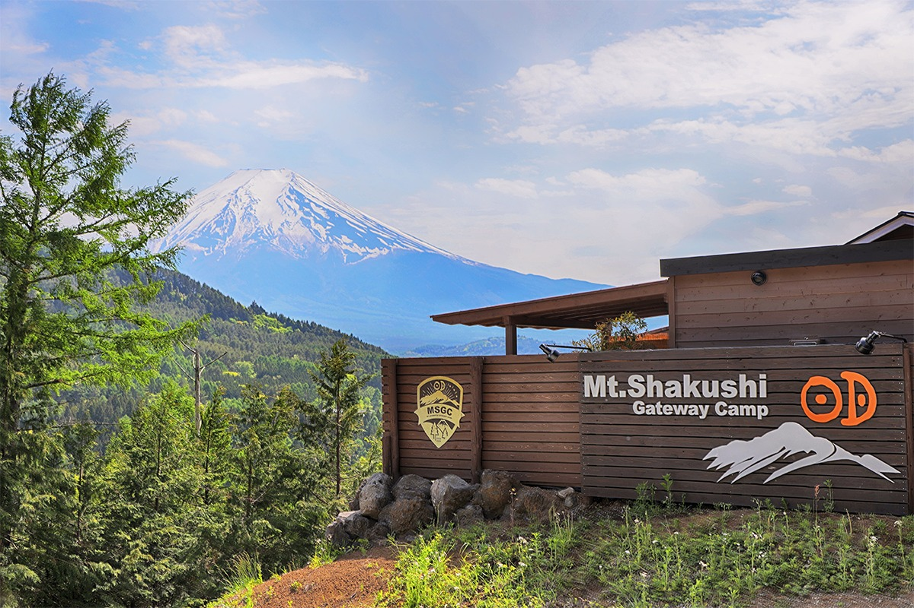
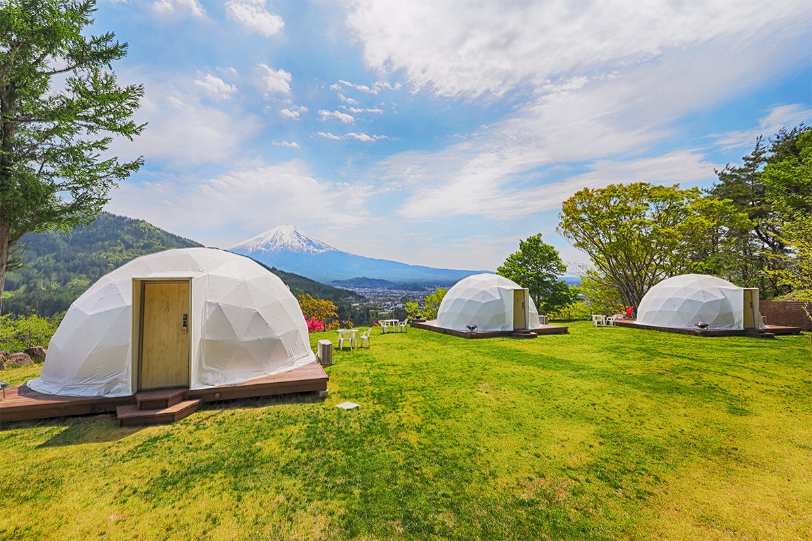
Главное здесь вид. Прямо напротив стоит Фудзи, а вдалеке видны Южные Альпы. Вечером солнце садится за склоны Фудзи, и картина меняется буквально с каждой минутой. После заката над головой открывается звёздное небо, а внизу загораются огни города.
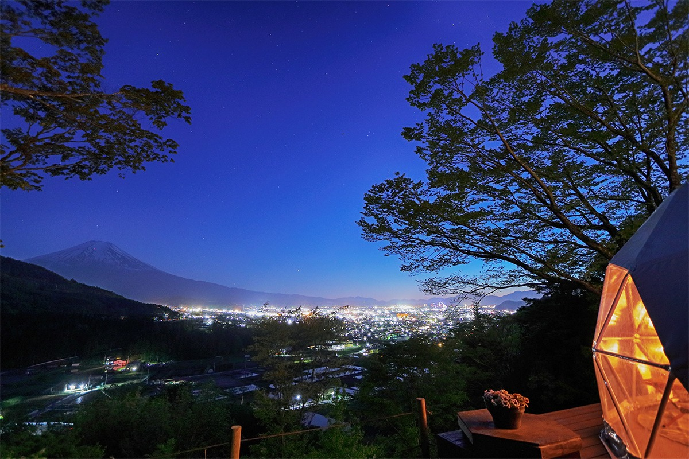
Сначала на этом месте поставили семь куполов. Стенки у них двойные, внутри есть кондиционер и отопление, так что жить в них удобно в любое время года. Купаться можно в купальнях под открытым небом из природного минерального камня, которые занимают только своей компанией; из них тоже видна гора. Получается отдых на природе, простой и в то же время с комфортом.
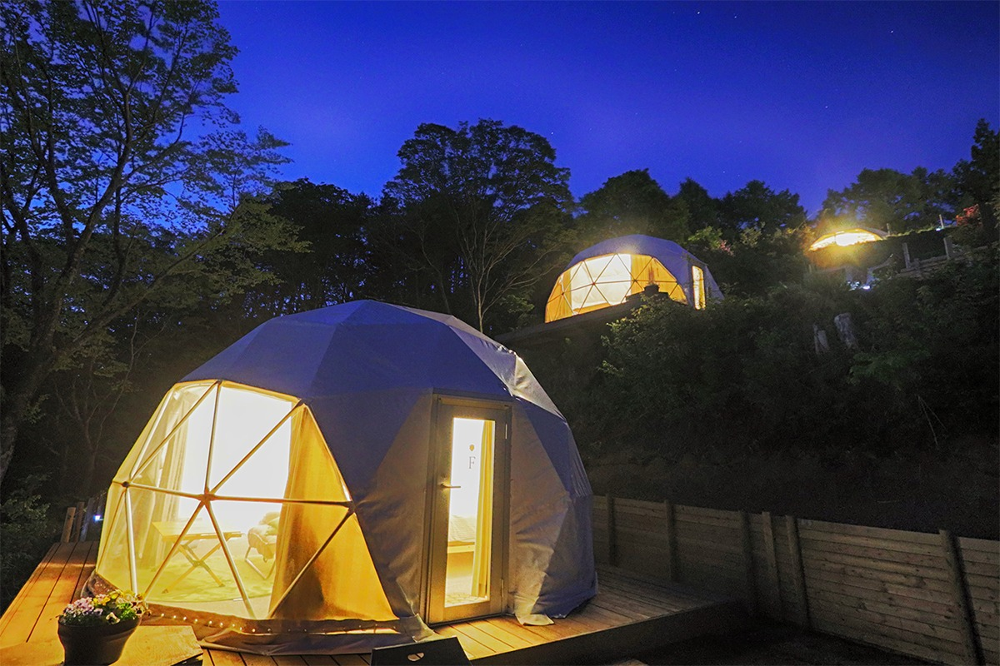
Номера
Premium Twin: Фудзи из каждого купола
20 марта 2021 года глэмпинг добавил три новых купола в категории Premium Twin. Все три развёрнуты к Фудзи. У каждого своя крытая площадка для еды, с которой открывается панорама без единой помехи.
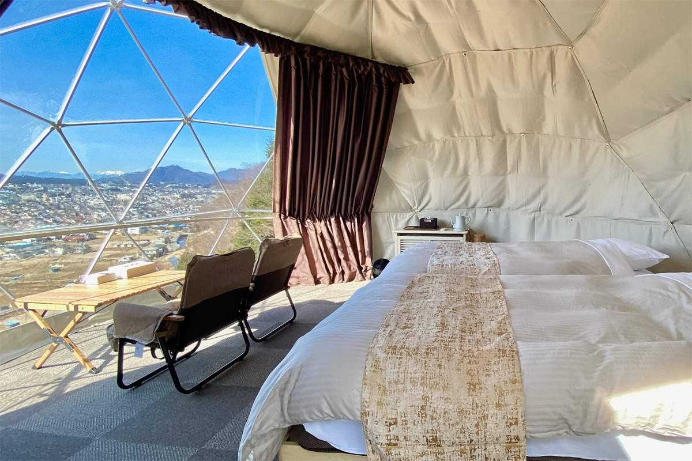
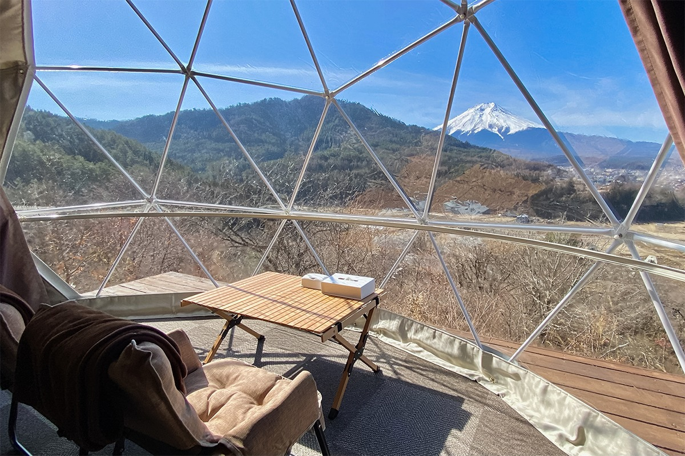
У купола Premium Twin диаметр 5 метров и площадь около 20 квадратных метров, он рассчитан на двоих. Внутри две полуторные кровати, кондиционер, обогреватель, сумка-холодильник, фен и зеркало. Из принадлежностей есть шампунь, кондиционер для волос, гель для душа, полотенца, зубные щётки, бритвы, набор для чая и тапочки.
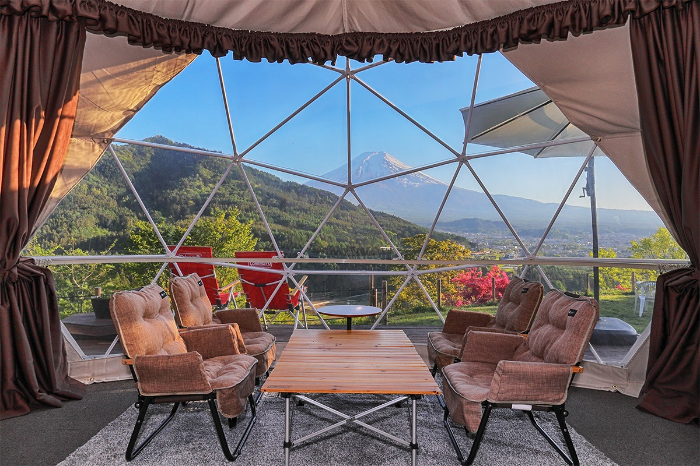
Еда
Барбекю с видом на гору
Круглый год гостям предлагают план с барбекю, а зимой ещё и план с горячим котелком набэ. Готовят из местных продуктов: свинины «Косю Фудзидзакура» и овощей с окрестных ферм. Жарить можно спокойно, без соседей: у каждого купола своя площадка для барбекю.
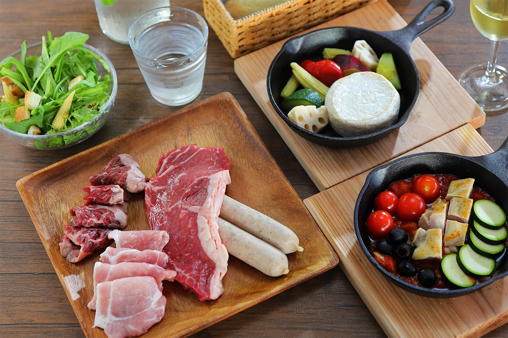
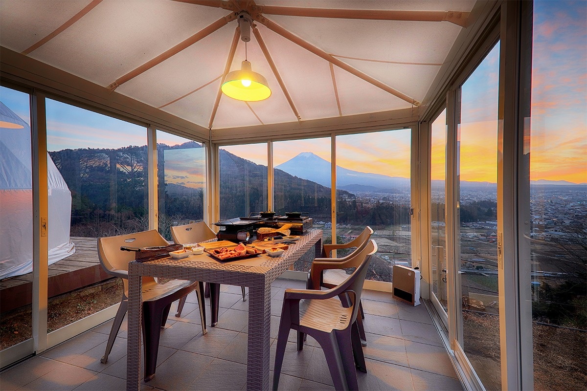
Многие заказывают к ужину вино, которое подбирает шеф. Можно остановиться и без еды: напрокат дают гриль, а продукты привозят свои и готовят сами.
Купальни
Фудзи из горячей воды
Только для гостей здесь есть отдельные купальни под открытым небом с природным минеральным камнем. Из воды видна Фудзи и пейзаж, который меняется с каждым сезоном, а ночью внизу горят огни. В 2021 году купален было две, а к концу марта того же года вместе с новыми куполами собирались открыть третью.
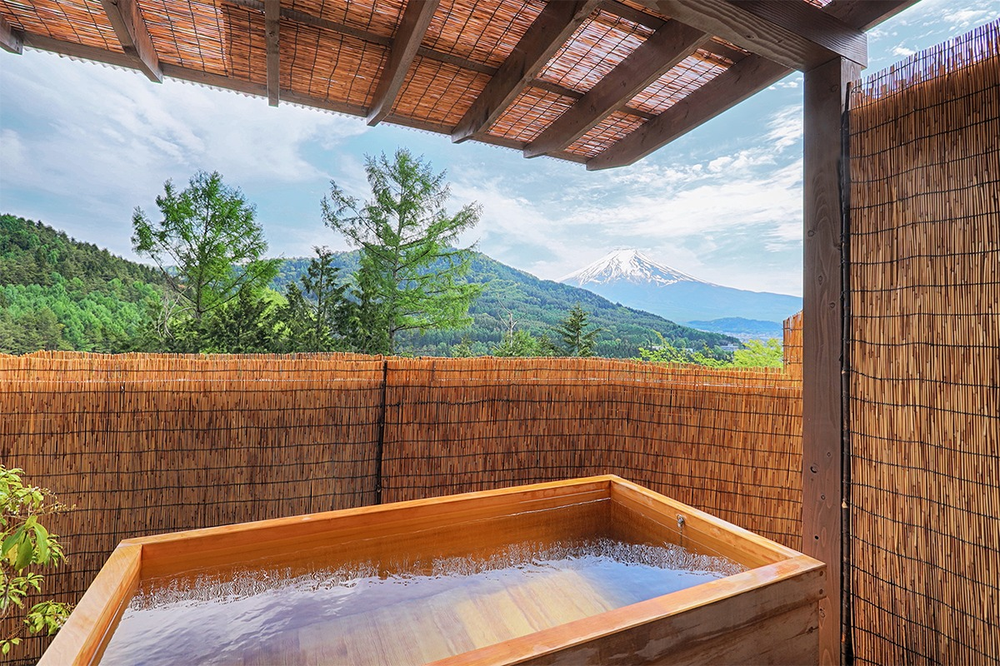
Для тех, кто впервые ночует на природе, есть душевые с горячей водой, отдельные туалеты для мужчин и женщин и просторные умывальники. Ещё одна баня, «Фудо-ю», находится за пределами глэмпинга и работает с ним по договорённости.
Mt.Shakushi Gateway Camp
- Адрес
- префектура Яманаси, Фудзиёсида, Оасуми, Фуруясики, 4101
- Номера
- 10 куполов трёх типов
- Заезд / выезд
- 15:00–19:00 / до 10:00
- Как добраться
- на машине около 15 минут от съезда Фудзиёсида-Нисикацура на скоростной дороге Тюо, от станции Фудзисан линии Фудзикю на такси около 20 минут